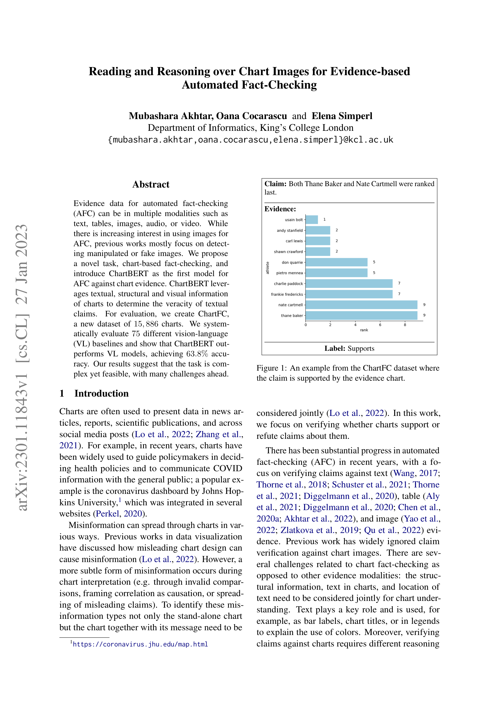
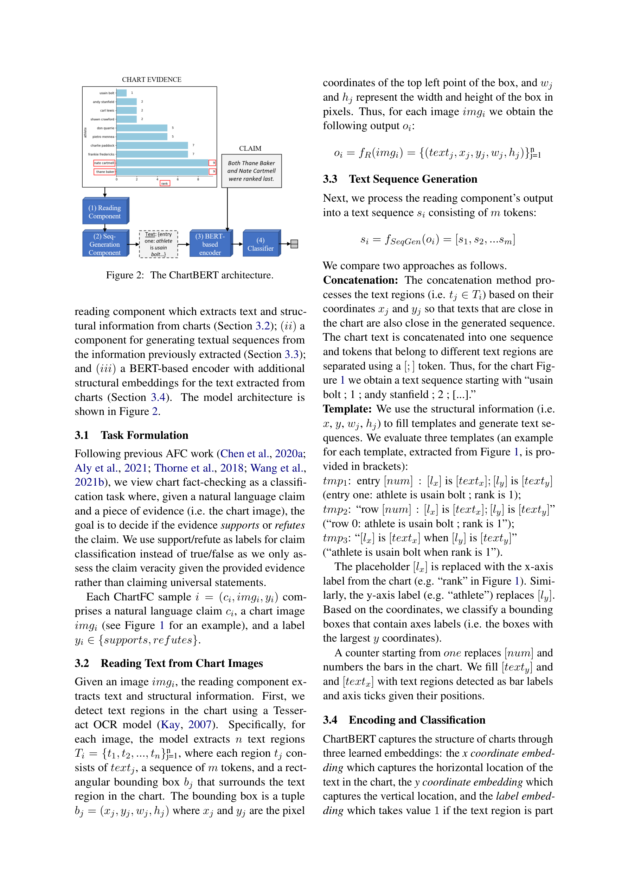
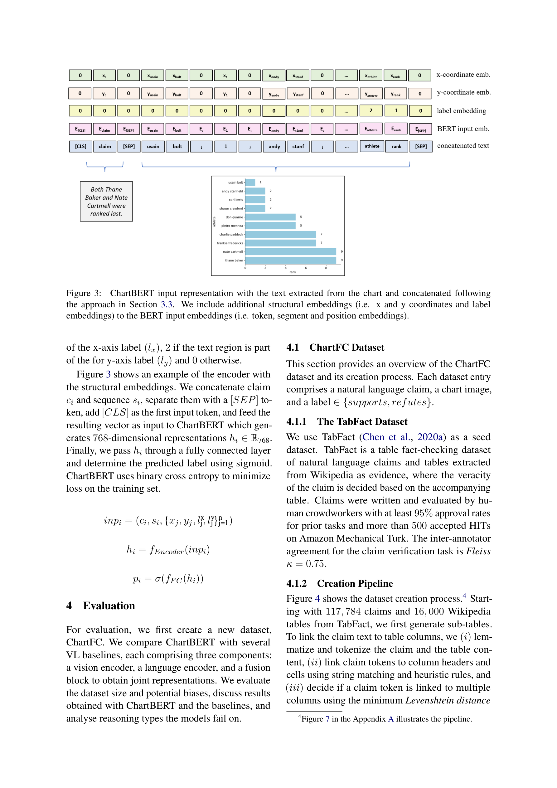
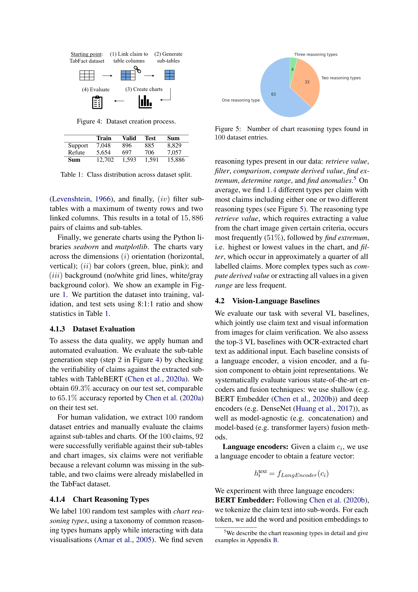
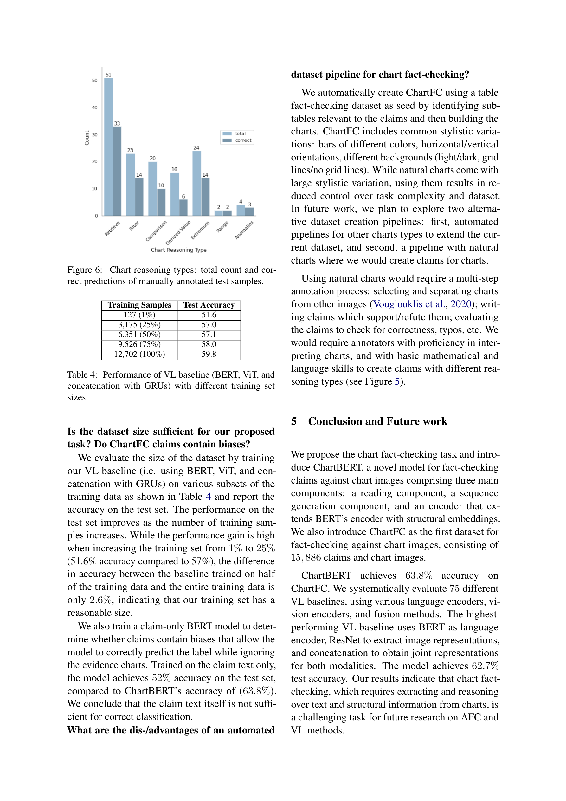

Figure 1
차트 이미지를 근거(evidence)로 활용한 자동 팩트체킹(Automated Fact-Checking, AFC)이라는 새로운 태스크를 제안하고, 이를 위한 최초의 모델 ChartBERT와 벤치마크 데이터셋 ChartFC(15,886개 차트-주장 쌍)를 구축한 논문이다. 텍스트 주장(claim)이 차트 이미지에 의해 지지(supports)되는지 반박(refutes)되는지를 판별하는 이진 분류 문제를 정의하고, OCR 기반 텍스트 추출과 구조적 임베딩을 결합한 BERT 확장 모델을 제시한다.

Figure 2

Figure 3

Figure 4
(4) Classification: [CLS] 토큰 표현에 FC 레이어 + sigmoid로 supports/refutes 이진 분류.
ChartFC 데이터셋 구축:
차트 변형: 방향(수평/수직), 바 색상(녹/청/분홍), 배경(그리드 유무, 흰색/회색).
VL 베이스라인 체계적 평가:

Figure 5
차트 이미지 기반 팩트체킹이라는 중요하고 시의적절한 새 태스크를 정의하고, 모델(ChartBERT)과 데이터셋(ChartFC)을 함께 제공한 선구적 연구이다. 75개 VL 베이스라인의 대규모 체계적 평가와 추론 유형별 오류 분석은 후속 연구에 귀중한 참고점을 제공한다. 다만 바 차트/합성 데이터에만 국한된 실험 설계와 63.8%라는 아직 낮은 정확도는 연구의 초기 단계를 반영하며, 실세계 차트의 복잡성과 다양성을 다루기 위한 상당한 후속 연구가 요구된다.